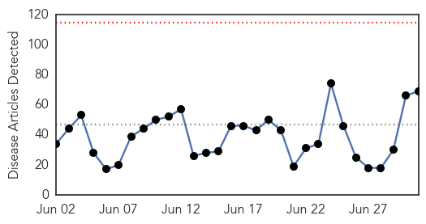
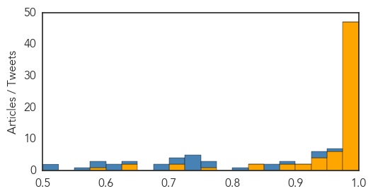
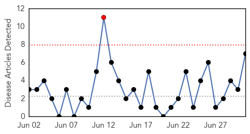

Ebola
30-Day Web Trend
0 alerts, 0 warnings

30-Day Twitter Trend
1 alerts, 0 warnings

Article Locations

Article Confidences
Top Articles:
- 1.000
- More than 100 had contact with Liberian teen who contracted Ebola
- 1.000
- First Ebola death since Liberia was declared to be virus-free
- 1.000
- Liberia quarantines an area where new Ebola case appeared
- 1.000
- Liberia registers second confirmed Ebola case
- 1.000
- Anxiety as Ebola returns to Liberia
- 1.000
- Virus Back? Teen Confirmed to Have Died of Ebola
- 1.000
- Unpaid Workers Protest At Health Ministry As New Cases Emerge
- 1.000
- Liberia feels the sting in Ebola’s tail
- 1.000
- As Liberia's Ebola cluster grows, cases continue elsewhere
- 1.000
- Could Ebola Make Its Way Back To Liberia?
- 1.000
- Liberia announces two more confirmed Ebola cases
- 1.000
- Health officials urge calm as Liberia confirms 2 new cases of Ebola
- 1.000
- Ebola Returns To Liberia With A Mysterious Case Near Monrovia
- 1.000
- Canadian military medical staff end Ebola mission
- 1.000
- As New Ebola Cases Emerge in Liberia, Officials Race to Halt Outbreak
- 1.000
- New Ebola Cases Spread Fear as Officials Race to Halt Outbreak
- 0.999
- Liberia finds second Ebola case, raising fears of resurgence
- 0.999
- Liberia’s push towards sustained zero Ebola cases thwarted
- 0.999
- Canadian Forces conclude Ebola mission in Sierra Leone
- 0.999
- Liberia announces two more confirmed Ebola cases
- 0.999
- Return of the Ebola Outbreak
- 0.999
- Liberia announces two more confirmed Ebola cases
- 0.999
- Liberia announces return of Ebola
- 0.999
- Ebola resurgence in Liberia “puts fear” in Nigeria
- 0.999
- New Case of Ebola Reported In Liberia
- 0.999
- 1 dead after Ebola reappears in Liberia
- 0.999
- Liberia announces two more confirmed Ebola cases
- 0.999
- Liberia Quarantine After Death
- 0.999
- PHE study finds #Ebola virus mutated slower than first thought
- 0.998
- Officials Confirm Ebola's Return To Liberia
- 0.998
- New Ebola Case Reported In Liberia
- 0.998
- Ebola: Nigerian Govt Raises Alert Level Across States
- 0.997
- The New Dawn Liberia
- 0.997
- Liberia announces two more confirmed Ebola cases
- 0.996
- Liberia confirms 2 new Ebola cases
- 0.996
- Liberia confirms a second Ebola case
- 0.996
- Liberia announces return of Ebola six weeks after eradication of disease
- 0.996
- Ebola Virus Resurfaces in Liberia After 2 Months of Being Ebola-Free
- 0.995
- Shellshocked Liberians brace for worst as Ebola returns
- 0.995
- UNMC named to National Ebola Training and Education Center
- 0.994
- Shellshocked Liberians brace for the worst; Ebola returns - ‘The Devil is back again in our land’ - Kuwait Times
- 0.991
- Area Quarantined after New Ebola Case was Found in Liberia
- 0.990
- Fears rise of new #Ebola outbreak in #Liberia
- 0.989
- Parents Give A Second Thought To Send Children To School After New Case of Ebola
- 0.986
- Red Cross intensifies Ebola operations with emphasis on helping people rebuild their lives
- 0.986
- 2nd Ebola case declared in Liberia as health workers protest
- 0.975
- Gov’t to Honor US Ebola Survivor on ‘26’ day
- 0.973
- WaterAid's Head Of Region cautions Liberia on Ebola prevention
- 0.972
- Liberia announces return of Ebola
- 0.972
- Canadian Armed Forces medical personnel complete Ebola-fighting mission in Sierra Leone
Showing top 50 articles...
Top Tweets:
- 0.980
- Health Officials Announce Return Of Ebola In Liberia - NPR http://t.co/CG0O6EFwd5 ebola EVD
- 0.950
- Officials confirm 2nd Ebola case in Liberia as health workers protest lack of ... - seatt http://t.co/QDcdCBCX7p ebola EVD
- 0.941
- Ebola Mystery: Dog Meat Story Eclipses Border Lapse Theory - Front Page Africa http://t.co/BrM9AUldwq ebola EVD
- 0.939
- Concerning news in's latest Ebola situation report: 6 of 20 cases in Guinea & Sierra Leone weren't registered contacts of cases. 1/n
- 0.937
- 2nd Ebola case declared in Liberia as health workers protest - USA TODAY http://t.co/9SznD5EUOK ebola EVD
- 0.932
- Liberia. 2 persons from the home of 17yrs-old ebola victim diagnosed & confirmed Ebola positive. @MicatLiberia
- 0.927
- Metro to Help Spearhead Ebola Battle - WOWT http://t.co/eaMJ0OdLfc ebola EVD
- 0.915
- La lutte contre le virus Ebola se poursuit à l’interface homme-faune-écosystème https://t.co/mRvkSHQrnt
- 0.909
- The Ebola Story https://t.co/KP2ppdXwZy. @DlaminiZuma
- 0.904
- Officials Confirm 2nd Ebola Case in Liberia as Health Workers Protest Lack of ... - ABC News http://t.co/gNDI6Ad83I ebola EVD
- 0.901
- Shizuoka man returning from Guinea with fever tests negative for Ebola but has ... - The Japan Times http://t.co/ZdmcTOQque ebola EVD
- 0.871
- UNMC named a national Ebola training center - Lincoln Journal Star http://t.co/LuumDzkzuc ebola EVD
- 0.871
- Shizuoka resident returning from West Africa tested for Ebola - The Japan Times http://t.co/8t4sRPMGEr ebola EVD
- 0.867
- Liberian teen dies of Ebola two months after country declared Ebola-free - New York Daily News http://t.co/vno93dCZFk ebola EVD
- 0.858
- Liberia Reports Second Case of Ebola - http://t.co/FMQyohd10H http://t.co/bfAE9qfEwi ebola EVD
- 0.854
- RT: 2 persons from the home of 17yrs-old ebola victim diagnosed & confirmed Ebola positive…
- 0.854
- RT: 2 persons from the home of 17yrs-old ebola victim diagnosed & confirmed Ebola positive…
- 0.851
- Liberia quarantines area where new Ebola case appeared - Fox News http://t.co/gHsj8qZl05 ebola EVD
- 0.827
- Health Officials Announce Return Of Ebola In Liberia - NPR http://t.co/W460sjcDPz
- 0.814
- Canadian Forces conclude Ebola mission in Sierra Leone - The Globe and Mail http://t.co/wK7AATSaAz ebola EVD
- 0.777
- The fight against the Ebola virus continues at the human-animal-ecosystem interface (in FRENCH) https://t.co/mXOdaeiIQg
- 0.760
- 4/n Latest Ebola update reports 2 new healthcare worker cases in Guinea. 1 had a lot of high-risk contacts - ie more cases could follow
- 0.741
- Ebola, 1 July 2015: 12 cases in Guinea, 8 in SierraLeone, 1 in Liberia. Total = 27,443 cases, 11,220 deaths http://t.co/e3YvcfuKFB
- 0.735
- .@kakape You are right. What I wonder is if their source of Ebola isn't known or if they are contacts of known cases missed by surveillance
- 0.728
- 5/n update says new Liberian Ebola case had no recent history of travel, contact w/ visitors from affected areas or funeral attendance
- 0.717
- .@UNMEER chief confident in the ability to reach zero Ebola cases in West Africa http://t.co/LuJLQebDcy
- 0.699
- Sierra Leone's rich and powerful are breaking the Ebola burial rules, reports the http://t.co/BHqJIfONmb
- 0.693
- 2/n That these 6 Ebola cases weren't registered as contacts means surveillance had missed them - or they were infected by missed cases.
- 0.643
- RT: As Liberia's Ebola cluster grows, cases continue elsewhere http://t.co/picTtFVv6e
- 0.638
- Ebola LessonsLearned http://t.co/wTcSsbyd4c
- 0.618
- 1 July - news pouch on avianflu avianinfluenza Ebola EbolaResponse MERS is here: http://t.co/4MTFv3pNhZ
- 0.601
- Kenyan medic assists fellow Africans affected by Ebola in Liberia http://t.co/wSnKiCeH9t
- 0.598
- Running A Business In West Africa After Ebola: A Lesson In Entrepreneurial Agility http://t.co/gUHzTb3lf6 Africaagainstebola
- 0.596
- RT: Reemergence of Ebola in Liberia shows importance of staying vigilant. We must stay focused til we reach zero cases http://t.c…
- 0.585
- Liberia's puzzle: How did the new Ebola patient become infected? http://t.co/xqCVA5yo5e
- 0.584
- Latest risk assessment on EVD Rainy season may cause logistical difficulties hampering control efforts http://t.co/yvwbjMYMBI Ebola
- 0.568
- If this outbreak escalates, I won't take another risky job Ebola health workers protest over hazard pay in Liberia http://t.co/bJ3NeBKGhx
- 0.566
- Liberia registers second confirmed Ebola case http://t.co/2CtIaogTrt via
- 0.554
- AFD blog `Liberia: Media Reports A Third Ebola Case, Additional Tests Pending' http://t.co/DnNjRD1SDy
- 0.550
- Guinee: Stratégie de relance et de résilience socio-économique Post-Ebola 2015-2017 https://t.co/p8K6e9Xars
- 0.531
- Ebola Returns To Liberia With A Mysterious Case Near Monrovia - NPR http://t.co/PCIR2ZkLR0
- 0.525
- Reemergence of Ebola in Liberia shows importance of staying vigilant. We must stay focused til we reach zero cases http://t.co/nd5i3FFdI4
- 0.514
- The Ebola outbreak in West Africa is not over. We must stay engaged until the job is done http://t.co/JD8vtDXDiY http://t.co/mVmaXUB3H8
- 0.512
- AFD Blog `@WHO Confirms Liberian Ebola Case' http://t.co/ZbyF7HDton
- 0.505
- AFD blog `Media Reports: 2nd Ebola Case In Liberia' http://t.co/kLijqYgRV3
West Nile Virus
30-Day Web Trend
1 alerts, 0 warnings

30-Day Twitter Trend
0 alerts, 0 warnings

Article Locations

Article Confidences

Top Articles:
- 0.997
- Arboviral Disease in New Hampshire
- 0.996
- Village of Lemont Spraying for Mosquitos Thursday
- 0.964
- NYC detects West Nile virus in Queens and Staten Island mosquitoes
- 0.853
- First West Nile Mosquitoes Found This Year in New Dorp Beach and Queens
- 0.752
- News, Weather and Sports for Lincoln, NE; KLKNTV.com
- 0.539
- West Nile Mosquitoes Found in New York and Texas
- 0.534
- West Nile Virus Confirmed in Webster County, Officials Say Likely Statewide
Top Tweets:
-
No tweets found for Jul 01, 2015